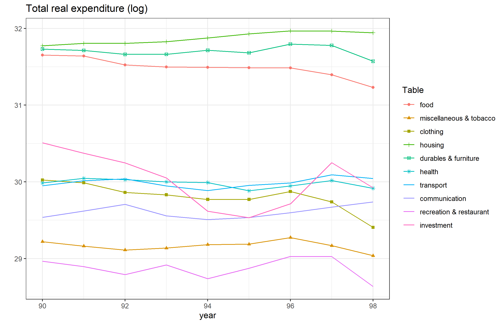
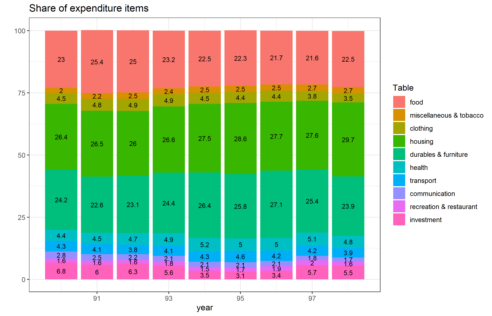
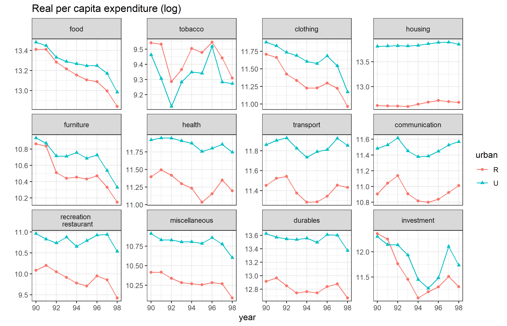

In this section we present some trends using the cleaned data of expenditure items.
Total expenditure across COICOP groups
Here is a piece of code showing the trend of expenditure items in real term:
library(tidyverse)
rm(list = ls())
list_EXP <- list.files(path = "exported", pattern = "^EXP.*\\Rds$")
## merging different rounds
EXP <- NULL
for (year in list_EXP) {
EXP <- assign(year, readRDS(paste0("exported/",year))) %>%
mutate(year = parse_number(year)) %>%
bind_rows(EXP)
}
exp <- EXP %>%
mutate(Table = as_factor(case_when(
table == 1 ~ "food",
table == 3 ~ "clothing",
table == 4 ~ "housing",
table == 6 ~ "health",
table == 7 ~ "transport",
table == 8 ~ "communication",
table == 9 | table == 11 ~ "recreation & restaurant",
table %in% c(12, 2) ~ "miscellaneous & tobacco",
table %in% c(13 , 5) ~ "durables & furniture",
table == 14 ~ "investment",
TRUE ~ NA_character_))) %>%
group_by(Table, year) %>%
summarise(value_r=sum(Value_r,na.rm = T), value=sum(Value,na.rm = T))
ggplot(exp, aes(x=year, y=log(value_r), color=Table, shape=Table)) +
geom_point() + geom_line() +
ggtitle("Total real expenditure (log)") + ylab("") +
theme_bw()

Expenditure shares of COICOP groups
The below code shows the change in the share of each expenditure item:
exp <- exp %>%
group_by(year) %>%
mutate(share=round(value/sum(value)*100,1))
ggplot(exp, aes(x=year, y=share, fill=Table, label = share)) +
geom_col() +
geom_text(position = position_stack(vjust = .5), size=3) +
ggtitle("Share of expenditure items") + ylab("") +
theme_bw()

## Percapita expenditure across COICOP groups and regions
In the next step, we graph the trend of percapita expenditure of each item for the rural and urban areas. For this, we need the population of each round and we use household-level summary data for that:
list_HH <- list.files(path = "exported", pattern = "^HH.*\\Rds$")
## number of households and individuals across years
Pop <- NULL
for (year in list_HH) {
Pop <- assign(year, readRDS(paste0("exported/",year))) %>%
group_by(urban) %>%
summarize(hh=sum(weight, na.rm=T), ind=sum(size*weight, na.rm=T)) %>%
mutate(year = parse_number(year)) %>%
bind_rows(Pop)
rm(year)
}
exp <- EXP %>%
mutate(Table = as_factor(case_when(
table == 1 ~ "food",
table == 2 ~ "tobacco",
table == 3 ~ "clothing",
table == 4 ~ "housing",
table == 5 ~ "furniture",
table == 6 ~ "health",
table == 7 ~ "transport",
table == 8 ~ "communication",
table == 9 | table == 11 ~ "recreation \n restaurant",
table == 12 ~ "miscellaneous",
table == 13 ~ "durables",
table == 14 ~ "investment",
TRUE ~ NA_character_))) %>%
group_by(Table, year,urban) %>%
summarise(value_r=sum(Value_r,na.rm = T), value=sum(Value,na.rm = T)) %>%
left_join(Pop) %>%
mutate(value_r_ph=value_r/ind)
ggplot(exp, aes(x=year, y=log(value_r_ph), color=urban, shape=urban)) +
geom_point() + geom_line() +
facet_wrap(~Table, scales = "free_y") +
ggtitle("Real per capita expenditure (log)") + ylab("") +
theme_bw()
